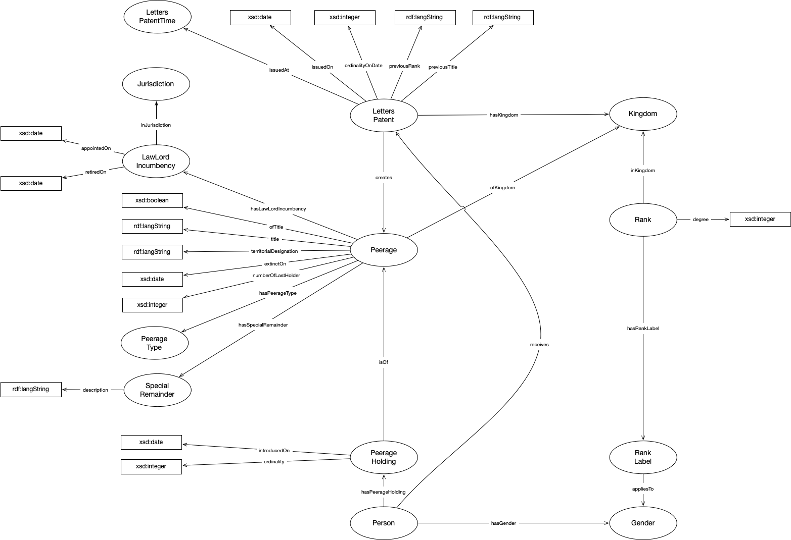

IRI: http://parliament.uk/ontologies/peerage/Gender
IRI: http://parliament.uk/ontologies/peerage/Jurisdiction
IRI: http://parliament.uk/ontologies/peerage/Kingdom
IRI: http://parliament.uk/ontologies/peerage/LawLordIncumbency
IRI: http://parliament.uk/ontologies/peerage/LettersPatent
IRI: http://parliament.uk/ontologies/peerage/LettersPatentTime
IRI: http://parliament.uk/ontologies/peerage/Peerage
IRI: http://parliament.uk/ontologies/peerage/PeerageHolding
IRI: http://parliament.uk/ontologies/peerage/PeerageType
IRI: http://parliament.uk/ontologies/peerage/Person
IRI: http://parliament.uk/ontologies/peerage/Rank
IRI: http://parliament.uk/ontologies/peerage/RankLabel
IRI: http://parliament.uk/ontologies/peerage/SpecialRemainder
IRI: http://parliament.uk/ontologies/peerage/affirmsCreationOf
IRI: http://parliament.uk/ontologies/peerage/appliesTo
IRI: http://parliament.uk/ontologies/peerage/hasGender
IRI: http://parliament.uk/ontologies/peerage/hasKingdom
IRI: http://parliament.uk/ontologies/peerage/hasLawLordIncumbency
IRI: http://parliament.uk/ontologies/peerage/hasPeerageHolding
IRI: http://parliament.uk/ontologies/peerage/hasPeerageType
IRI: http://parliament.uk/ontologies/peerage/hasRank
IRI: http://parliament.uk/ontologies/peerage/hasRankLabel
IRI: http://parliament.uk/ontologies/peerage/hasSpecialRemainder
IRI: http://parliament.uk/ontologies/peerage/inJurisdiction
IRI: http://parliament.uk/ontologies/peerage/inKingdom
IRI: http://parliament.uk/ontologies/peerage/isOf
IRI: http://parliament.uk/ontologies/peerage/issuedAt
IRI: http://parliament.uk/ontologies/peerage/receives
IRI: http://parliament.uk/ontologies/peerage/appointedOn
IRI: http://parliament.uk/ontologies/peerage/degree
IRI: http://parliament.uk/ontologies/peerage/description
IRI: http://parliament.uk/ontologies/peerage/extinctOn
IRI: http://parliament.uk/ontologies/peerage/introducedOn
IRI: http://parliament.uk/ontologies/peerage/issuedOn
IRI: http://parliament.uk/ontologies/peerage/numberOfLastHolder
IRI: http://parliament.uk/ontologies/peerage/ofTitle
IRI: http://parliament.uk/ontologies/peerage/ordinality
IRI: http://parliament.uk/ontologies/peerage/ordinalityOnDate
IRI: http://parliament.uk/ontologies/peerage/previousRank
IRI: http://parliament.uk/ontologies/peerage/previousTitle
IRI: http://parliament.uk/ontologies/peerage/retiredOn
IRI: http://parliament.uk/ontologies/peerage/territorialDesignation
IRI: http://parliament.uk/ontologies/peerage/title
This HTML document was obtained by processing the OWL ontology source code through LODE, Live OWL Documentation Environment, developed by Silvio Peroni.